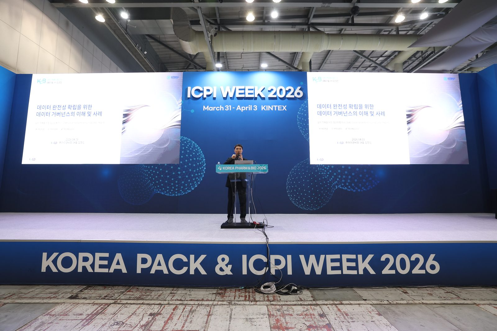
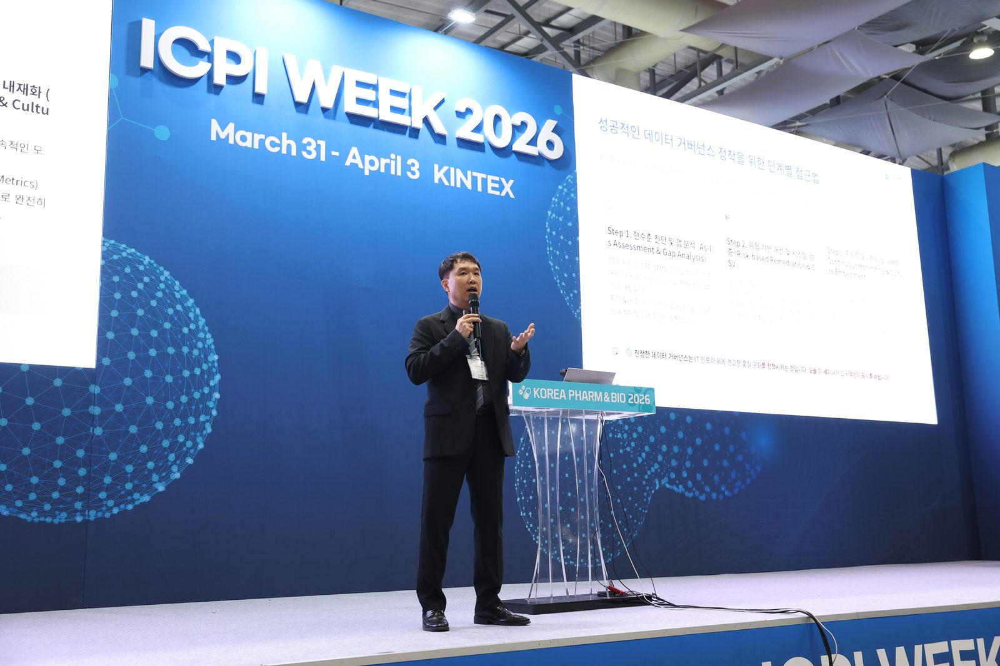
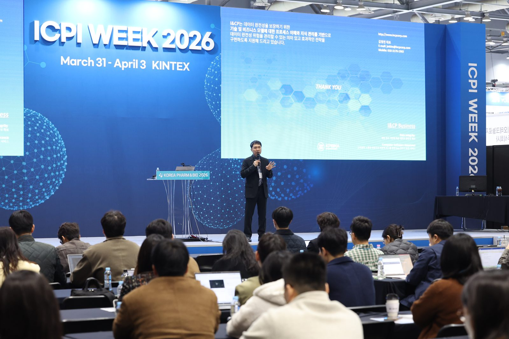
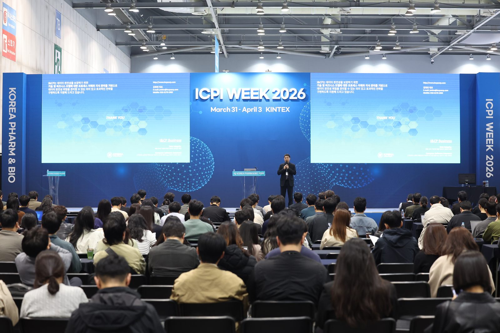
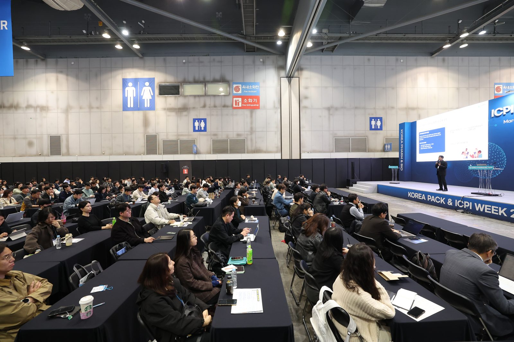
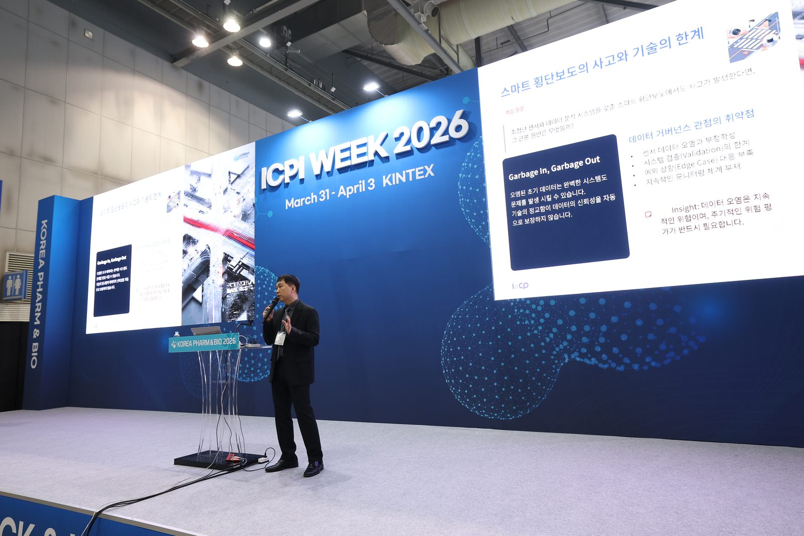
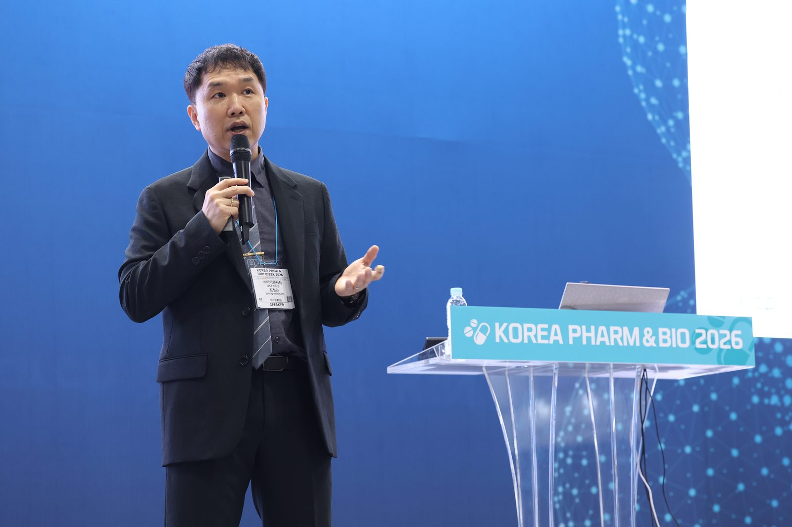
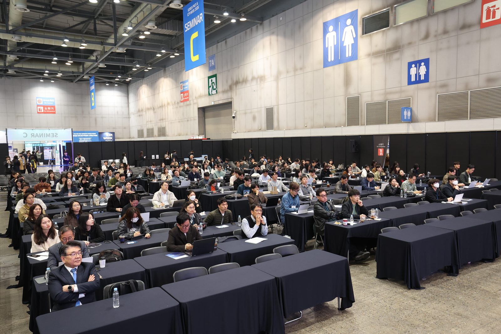
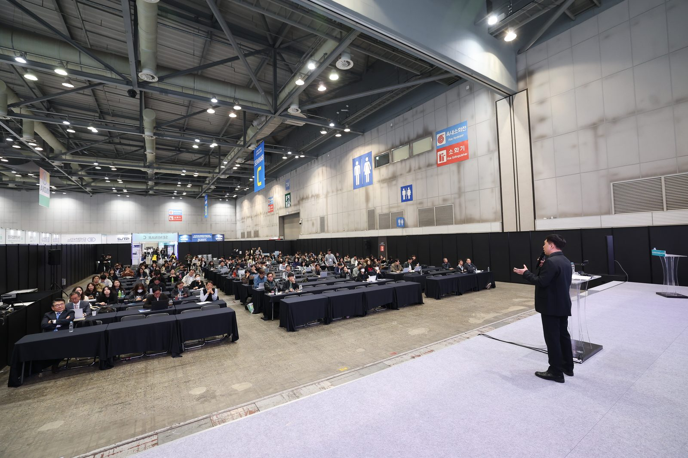
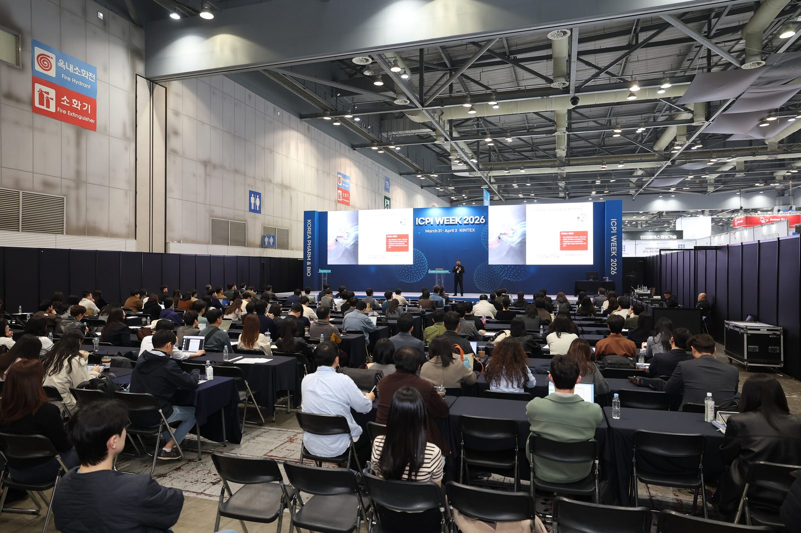

주요 내용 Key Takeaways
데이터 거버넌스를 갖추려는 노력에도 기술 고도화 속에서 실행력을 유지하는 일은 여전히 숙제입니다. 거버넌스의 의미를 다시 정의하고 실무 적용을 위한 접근방법을 제시했습니다.
ISO 37301 컴플라이언스 경영과 연계한 거버넌스 운용, 그리고 의약품 제조의 디지털 혁신이 거버넌스 확립에 선택인지 필수인지를 짚었습니다.
품질기반 개발 환경의 시험 데이터 관리 전략과, Audit Trail 구현으로 메타데이터를 확보하는 방안이 공유되었습니다.
AI 도입의 전제조건을 점검하는 거버넌스 체크리스트와, DI 전담팀이 정리한 데이터 거버넌스 실행 과제로 마무리했습니다.
의약품 품질 세미나 2일차(DI)로, 식품의약품안전처 · 한국제약바이오협회의 품질관리 세미나와 함께 열렸습니다.
여섯 가지 일상 비유 Opening · 김정민 대표
Garbage In, Garbage Out — 오염된 초기 데이터는 완벽한 시스템도 무너뜨립니다. 위험은 주기적으로 평가해야 합니다.
감사기록(Audit Trail)은 문제의 조기 신호입니다. 주기적인 검토가 품질 방어의 핵심입니다.
기술만으로는 부족합니다. IT 인프라 위에 품질 문화를 정착시키는 것이 진정한 거버넌스입니다.
다양한 배경의 구성원이 같은 데이터 완전성 시야를 갖도록 표준화된 교육 훈련 체계가 필요합니다.
프로세스 변경은 경험이 아니라 신뢰할 수 있는 데이터에 근거해야 하며, 변경 전후의 추적성이 핵심입니다.
최악의 상황에서도 ALCOA++ 원칙을 지키고, 추적 · 재구성이 가능하도록 절차와 훈련을 갖춰야 합니다.
프로그램 Program
| 시간 | 프로그램 | 연사 |
|---|---|---|
| 10:10 – 10:15 | 개회개회사 | 한국제약바이오협회 |
| Part 1. 데이터 거버넌스의 의미와 확립 | ||
| 10:15 – 10:30 | 오프닝데이터 완전성 확립을 위한 데이터 거버넌스의 이해 및 사례 — 실무 적용을 위한 접근방법 제시 | 김정민 대표 · ㈜아이앤씨피 |
| 10:30 – 11:20 | 세션 1ISO 37301과 연계한 데이터 거버넌스의 운용 | 이원기 원장 · 한국컴플라이언스인증원 |
| 11:20 – 11:40 | 세션 2데이터 거버넌스를 확립하기 위해 의약품 제조에 있어서 디지털 혁신이 선택인가? 필수인가? | 박영준 교수 · 아주대 약대 / 의약품제조혁신학회 학회장 |
| 11:40 – 12:10 | 세션 3데이터 거버넌스를 위한 품질기반 의약품 개발 환경에서의 제품 개발 시험 데이터 관리 전략 | 진성규 교수 · 동국대 약대 / 의약품제조혁신학회 위원장 |
| 12:10 – 12:50 | 점심 | |
| Part 2. 데이터 거버넌스 실행 | ||
| 12:50 – 13:20 | 세션 4데이터 거버넌스 실행의 최적화를 위한 Audit Trail 구현의 추적성 (메타데이터 확보 방안) | 변휘섭 팀장 · 페이지원 |
| 13:20 – 13:50 | 세션 5AI 시대의 데이터 거버넌스 로드맵 (AI 도입의 전제조건 달성을 위한 AI 대비 거버넌스 체크리스트) | 이태원 대표 · 갬프연구소 |
| 13:50 – 15:10 | 세션 6데이터 거버넌스와 데이터 완전성(DI) 실무 가이드 (데이터 거버넌스 실행을 위한 과제) | 최병인 팀장 · 보령 DI팀 |
| 15:10 – 15:20 | 요약Update for Data Integrity (Summary) | 김정민 대표 · ㈜아이앤씨피 |
주최 측 안내 자료 기준이며, 현장 사정에 따라 일부 변경되었을 수 있습니다.
현장 스케치 Photos
사진을 누르면 크게 볼 수 있습니다




















